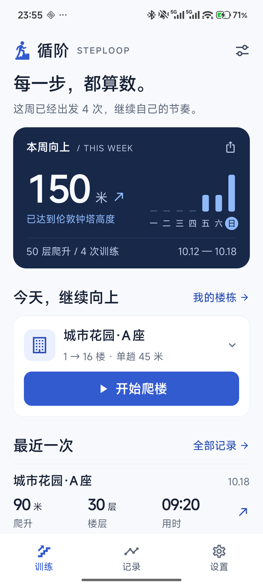

A LITTLE HIGHER. EVERY DAY.
每一步向上，
都算数。
从一次爬楼，到一周的坚持。
用清晰的楼层、爬升和训练记录，
看见自己的节奏。

找到自己的节奏。原生界面截图 · 演示训练数据
THE NEW STEPLOOP / 新版体验
01 — 03
把注意力，
留给下一层。
更清晰的信息，更从容的留白。
从出发到完成，每个阶段各有重点。
界面中的数值为演示数据。自动计层仍在试用阶段，训练后可核对、修正楼层。
01 / 03 浅色与深色，同样清晰。
YOUR PROGRESS. YOURS TO KEEP.
按照自己的节奏，
积累自己的进步。
不必先创建账户，也不必把每次训练交给云端。
你的记录，留在自己手中。
回看每一次训练
按楼栋和日期查找，查看逐轮成绩与本周爬升。
重要的积累，记得保存
在设置里导出备份，换机或更新前，给记录留一份副本。
给这一周，一张成果卡
把爬升与坚持做成分享卡片，愿意分享时再分享。
READY WHEN YOU ARE / 开始使用
简单三步下一次爬楼，
从这里开始。
- 01
下载并安装
在 Android 手机浏览器下载安装包，按系统提示允许该浏览器安装应用。已安装旧版时，先保存备份，再覆盖更新。
- 02
选好你的楼栋
新建楼栋、设置起止楼层，按应用引导准备训练。首次使用时，允许运动识别及训练通知。
- 03
开始，然后回顾
照常爬楼，结束后核对每轮楼层并保存。返回记录页，下一次打开仍能继续回看。
旧版本可以直接更新吗？
从本网站下载的旧公开版可使用相同发布签名覆盖更新。更新前，请在“设置 → 备份与导出 → 保存备份到下载”保存一份备份。1.1.5 补全了楼栋模板备份，升级后建议重新导出。内部测试签名可能不同；遇到签名冲突时请保留原应用与数据，通过问题反馈联系维护者。
自动计层的结果准确吗？
自动计层仍处于试用阶段，结果受手机传感器、携带位置和环境影响。请在训练结束后核对、修正楼层。真实运动、锁屏连续记录和耗电仍需更多验证；页面演示不代表准确率承诺，热量为估算。
需要注册或者联网吗？
无需注册。训练与记录保存在本机，可在设置中导出备份。下载安装和打开外部链接需要网络；公开包未配置在线地图，按楼栋设置即可开始训练。
支持哪些手机？有 iPhone 版吗？
本次提供 Android 7.0 及以上的 ARM64 与 x86_64 安装包。自动计层体验取决于机型传感器能力，请根据应用提示使用。目前没有可公开下载的 iPhone 版。